A hot cocoa bar fails in three predictable ways. Too many jars, not enough counter, and cocoa that is lukewarm with a skin on it by the second hour.
All three are planning problems, not decorating problems. Pick a layout that fits the space, cap the toppings, and hold the cocoa at the right temperature, and the bar runs itself while you talk to people.
These 22 setups are sorted by how much room they need and how many guests they serve. The rules first, because the temperature and the two-hour dairy limit apply to every one of them.
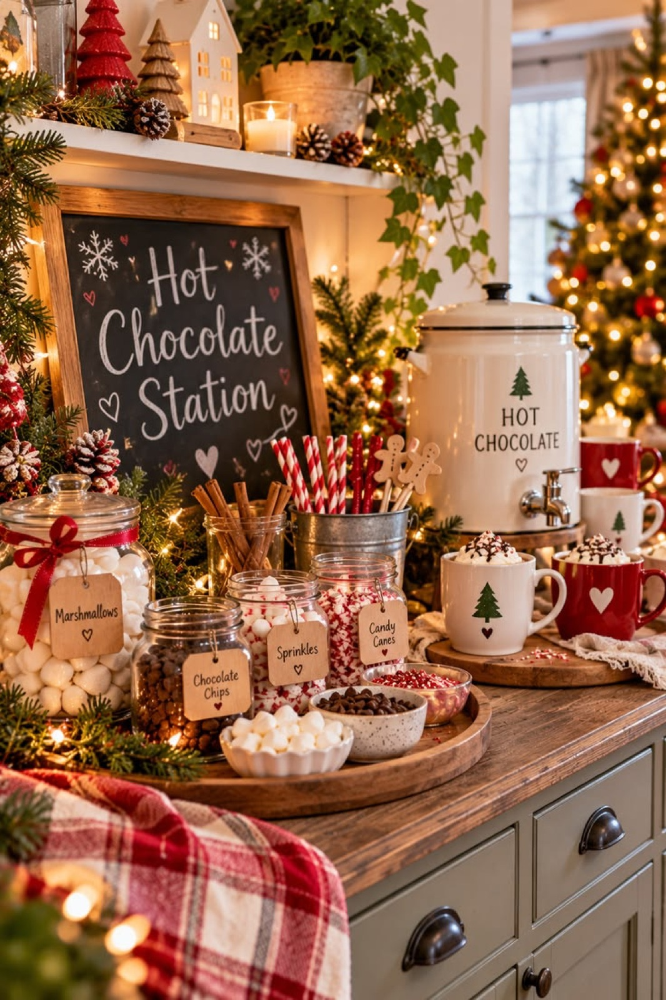
Five Rules for a Cocoa Bar That Runs Itself
- Hold the cocoa at 140°F, never boiling. A slow cooker or urn on the warm setting does it. Boiled milk scorches on the bottom and grows a skin on top.
- Count one and a half mugs per guest. People come back for a second cup and abandon the first one. Twelve guests need 18 mugs or a stack of sturdy paper cups.
- Six to eight toppings, every jar full. More than eight is clutter, and half of it goes untouched. A full small jar looks better than a half-empty big one.
- Label every jar and offer one dairy-free milk. A tag for nuts, dairy and gluten saves a guest from asking. Oat milk covers most needs in one carton.
- Keep the hot urn at the back and out of reach. Top shelf or back of the table, cord tucked behind, with a tray under the spigot. Children reach for the spigot first.
Small Setups for a Tray or a Counter
1. Put the Whole Bar on One Tray
A bar on a tray is a bar you can move. When the counter is needed for dinner, the tray lifts off in one piece and comes back for dessert.
A wood tray about 16 by 24 inches holds a set of labeled jars, a couple of mugs, a bowl of whipped cream and a jar of candy canes, as this one does under a Hot Cocoa Station sign.
Keep the whipped cream in the fridge until the bar opens. Dairy gets two hours at room temperature, and a can on the tray since noon has used them up by two.
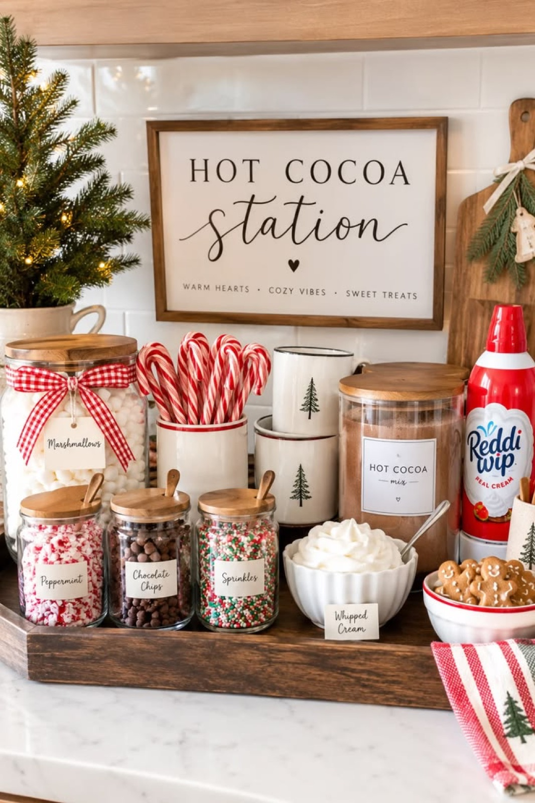
2. Let the Mugs Do the Decorating
Novelty mugs are the decoration. Pick one style, as these Santa mugs are, and keep everything else quiet: a narrow wooden tray with three small jars of marshmallows, shaved chocolate and cinnamon sticks.
Cinnamon sticks double as stirrers and hold up in hot cocoa for the whole cup. A candy cane stirrer melts into sweetness within minutes, so offer it as a topping, not a spoon.
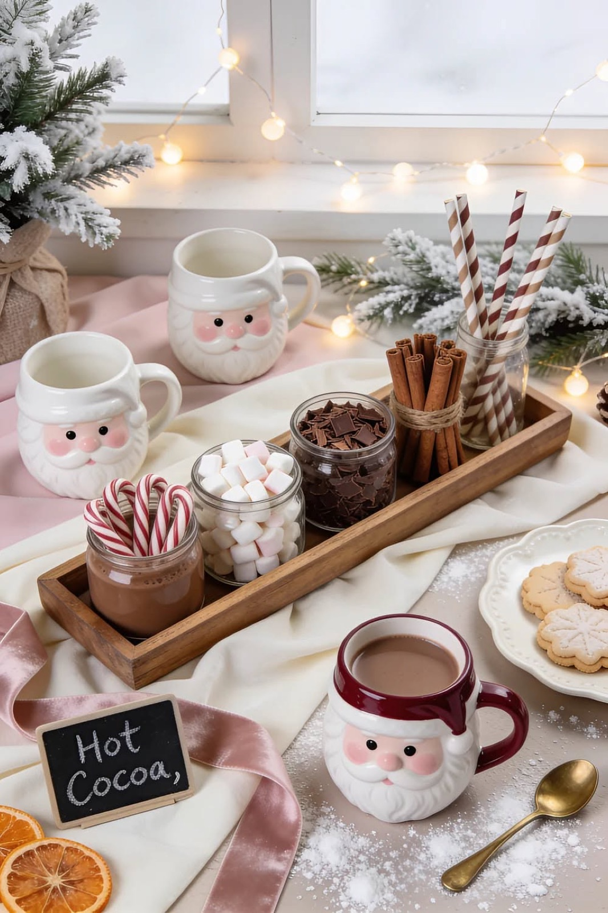
3. Load the Tiered Tray Heavy at the Bottom
A tiered tray is the cheapest way to add height on a small counter. It is also top-heavy if the jars go up high.
Marshmallow jar and the mug on the bottom tier, candy canes and signs on top, as this one does. A bump then rocks it instead of tipping it.
Wipe the tiers with a damp cloth before you start and again when it comes down. Candy leaves rings that set hard overnight.
Three signs is the limit on a two-tier tray. More and it reads as a shop shelf.
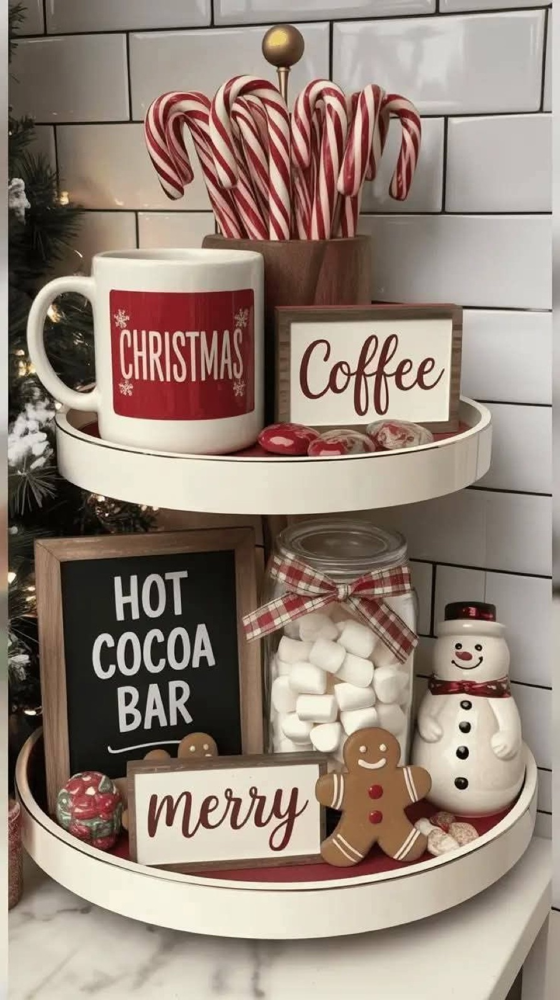
4. Turn a Crate Into a Mug Shelf
A wooden crate on its side is mug storage and a display shelf in one. Mugs inside, jars and a small chalkboard on top, as here with a Warm Up Here sign.
Sand the inside edges so the mugs do not snag, and set the jars on a board or a square of parchment. Raw wood stains the moment a sticky lid touches it.
A crate holds six mugs. For a bigger party, stack two.
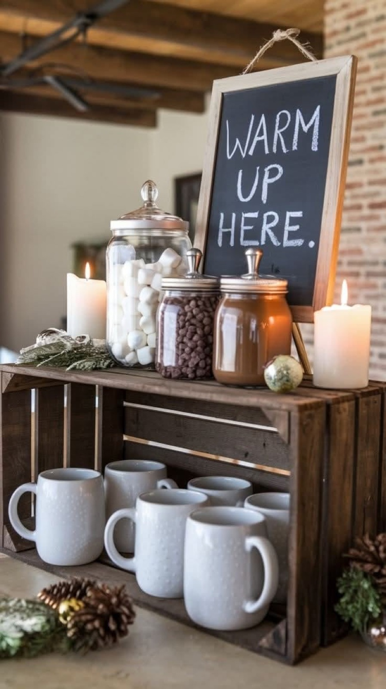
Carts and Dispensers for a Crowd
5. Use a Spigot, Not a Ladle
A pot and a ladle means drips, spills and a host stuck serving. A dispenser with a spigot holds the heat, pours in seconds and lets guests help themselves, as this white urn does under a chalkboard.
Write the topping list with a chalk marker, which does not smudge like stick chalk, and keep a tray under the spigot. Every spigot drips.

6. Park the Cart, Then Lock the Wheels
A rolling cart gives three levels and lets the bar move from the kitchen to the living room. Dispenser at the back of the top shelf, mugs and jars in the middle, refills on the bottom, as this black cart is set up.
Lock the wheels once it is in place, and park it in a corner. A cart beside the kitchen doorway gets brushed by every person carrying a plate.
A dish towel over the handle, as here, is not just decoration. It is where the spills get wiped.
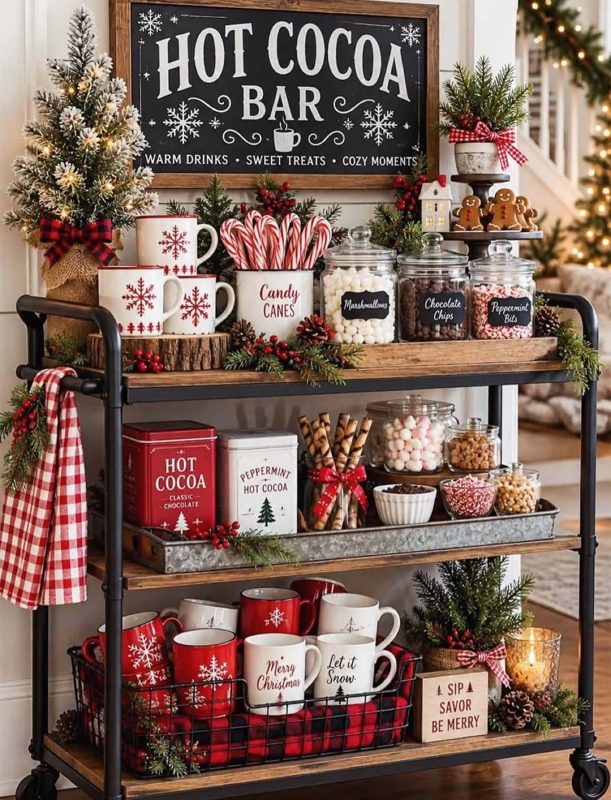
7. Fill the Big Jars to the Lid
Clear jars make the toppings the decoration, and a half-empty clear jar is the saddest thing on the cart. Fill every jar to the lid and keep the refill bags on the bottom shelf.
This metal cart does it with candy canes, marshmallows and pretzel rods in tall jars, and bowls of chips and nuts in front.
Give every jar its own scoop or tongs so hands stay out of the food.
Battery fairy lights along the lower shelf give the glow without a cord across the floor.
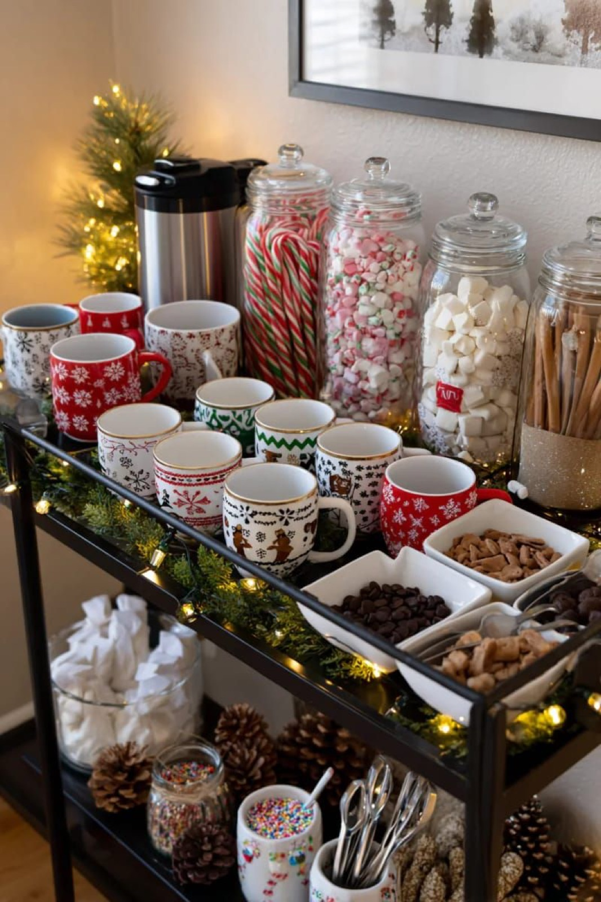
8. Keep the Marshmallows Under a Lid
An open bowl of marshmallows goes stale within an hour of a warm room. Lidded apothecary jars, as on this gold cart, keep them soft all afternoon.
Serve in clear glass mugs so the cocoa color shows, and set out four or five at a time rather than the whole stack. A boxwood garland along the bottom rail softens all that brass.
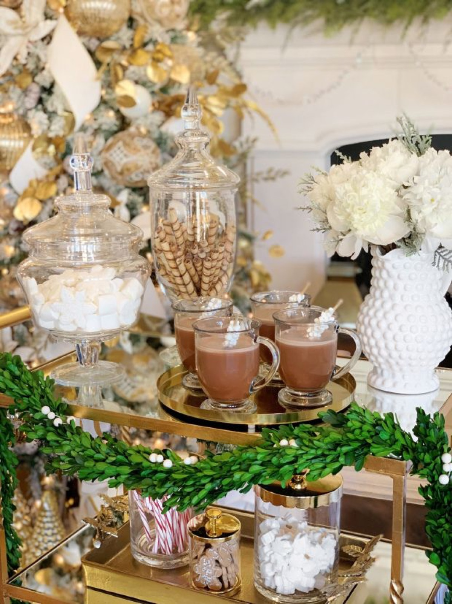
Themed Cocoa Bars
9. Make Every Item Repeat the Theme
A theme works when nothing on the table disagrees with it. This gingerbread bar has gingerbread cookies, cinnamon, toffee bits, ginger cocoa and a gingerbread-man garland, and so plain mason jars look planned.
Bake the cookies two days ahead and store them airtight. Day-old gingerbread is crisp enough to dunk, and fresh gingerbread falls apart in the mug.
Hang the garland above the table, not across the front. Across the front it gets dipped in cocoa.
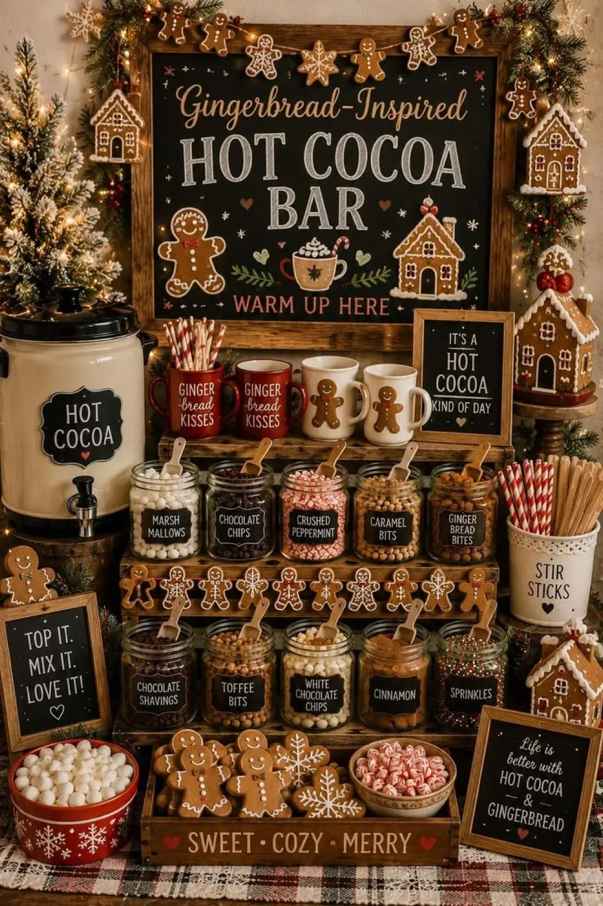
10. Crush the Candy Canes and Serve From a Shaker
A bowl of crushed candy cane turns into one sticky brick in a humid kitchen. Crush the canes in a zip bag with a rolling pin and serve from a sugar shaker, and they stay loose all night.
Red and white stripes cost almost nothing to build. Paper straws, peppermint sticks and striped napkins, as on this bar, do the work.
Keep one jar of plain marshmallows for the guests who do not like mint. There is always one.
A sign with the rules of the bar, as the Get Your Peppermint On card here, saves answering the same question twelve times.
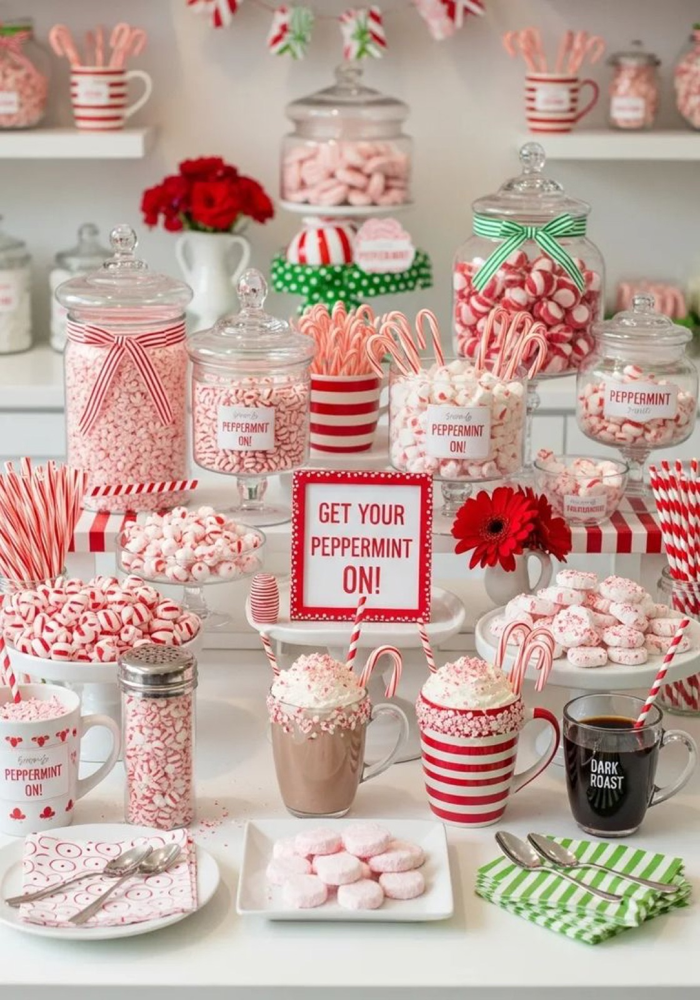
11. Keep the Fake Snow Away From the Food
White, silver and pale blue read as fresh snow. White mugs, flocked trees and snowflake tags on clear jars, as this bar has, carry the whole theme.
Peppermint bark and white chocolate chips keep the toppings in the same palette. Scatter fake snow on the signs and the trees, never near the jars. It is not edible and it travels.
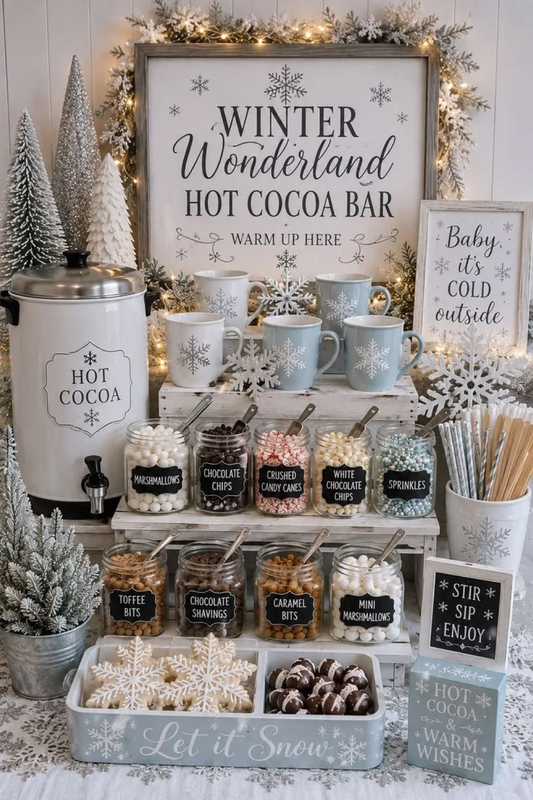
12. Use Gold Three Times, Then Stop
Metallic gold reads as formal, and too much of it reads as a casino. Gold spoons, gold-rimmed mugs and one gold-framed sign, as on this cream bar, and the rest stays cream.
Warm lights make the difference. A 2700K string makes gold glow. A cool white string makes it glare.
Cream and gold shows cocoa drips more than any other palette. Keep a damp cloth behind the urn.
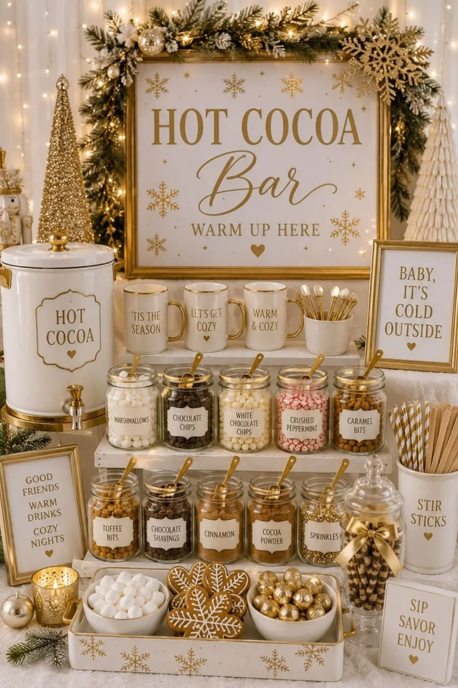
13. Hang the Mugs and Win Back the Table
Mugs take more table than anything else on a bar. A rack or pipe frame with hooks, as over this woodland bar, puts them overhead and leaves the table for jars and the kettle.
Pinecones, moss and fairy lights give the forest feel with no extra color. Battery tealights only, this close to dry greenery and paper cups.
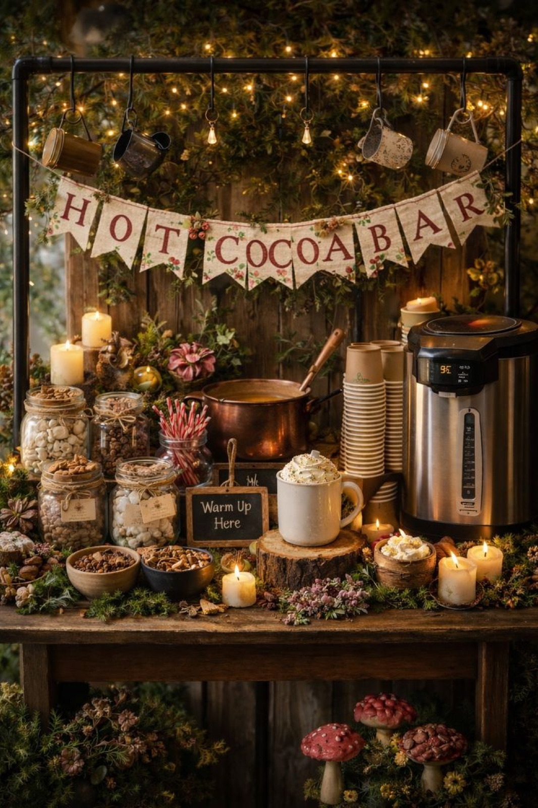
14. Write the Recipe on the Board
A hand-lettered recipe sign turns a bar into a tradition. Guests photograph it and make it at home, which is the whole point of serving good cocoa.
This old-fashioned bar has the recipe on a chalkboard above a wooden tray of bowls, with knit stockings hung from a rail above.
Keep the stockings well clear of any candle and the urn. Knit and steam do not mix.
A wooden tray under the small bowls stops them sliding when someone leans on the table.
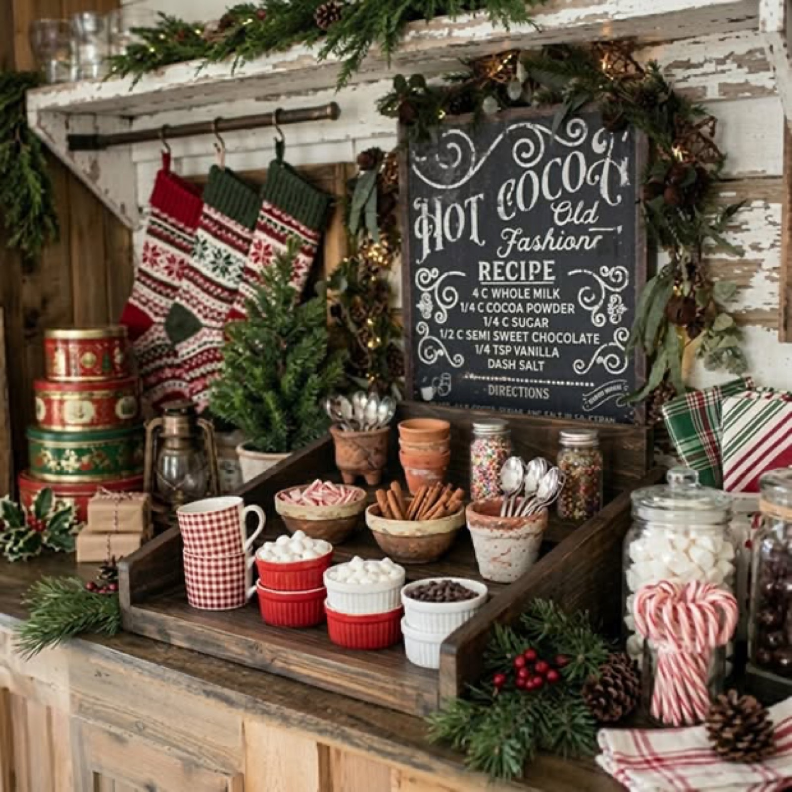
Party Tables and Big-Batch Cocoa
15. Make It on the Stove, Hold It in the Slow Cooker
For 15 or more, a slow cooker is the only sane option. Make the cocoa in a pot where you can watch it, pour it into the cooker and set it to warm. A six-quart cooker serves about 20 mugs.
Stir every 30 minutes. Cocoa settles and milk skins, and the warm setting does not stir for you.
Keep the ladle on a plate and a stack of napkins beside it, as this station does with a Build Your Own sign and a tower of paper cups.
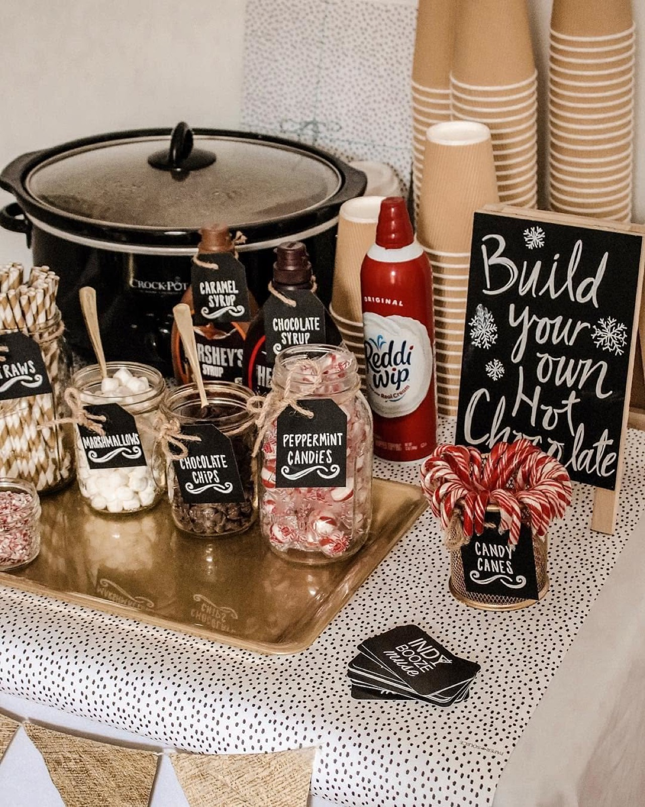
16. Small Bowls Beat Jars for Choosing
Guests choose faster from an open bowl than from a jar with a lid. Square white bowls of sprinkles, chocolate chips, mini marshmallows and shaved chocolate, as on this table, look tidy and refill in seconds.
Put the bowls within arm's reach of the mugs. Nobody should carry a full cup across the table to reach the sprinkles.
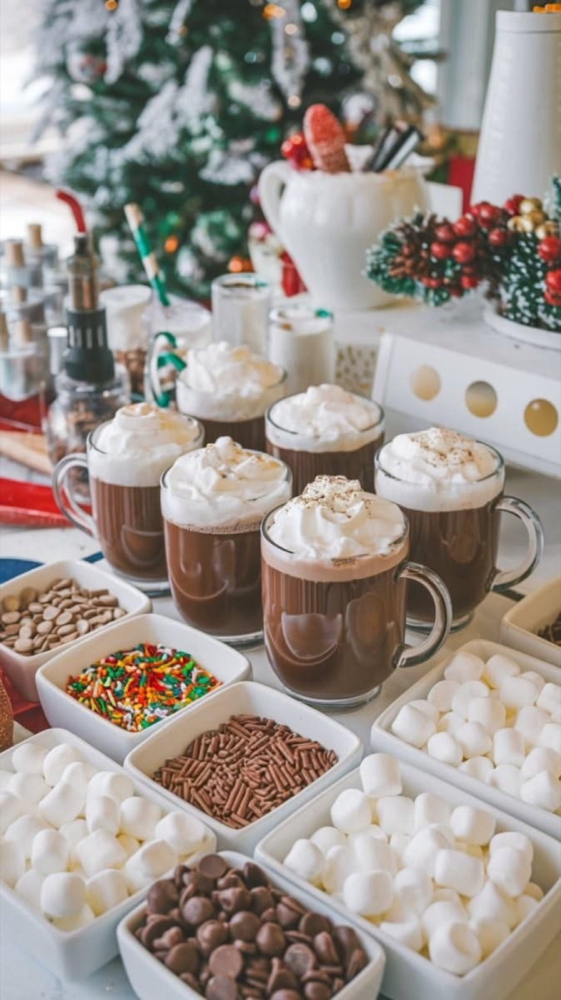
17. Portion the Toppings Into Ramekins
A ramekin holds enough for a small party and nothing goes soggy waiting. Six-ounce ramekins of marshmallows and sprinkles, as here, top up from a bag in seconds.
Set one on a wood slice for height, and tuck pinecones between the bowls to fill the gaps.
Wild pinecones go in the oven first. Foil, 200°F, 45 minutes, and the sap and the insects are gone.
Keep the pinecones an inch or two from the bowls. Nobody wants pine dust in the marshmallows.
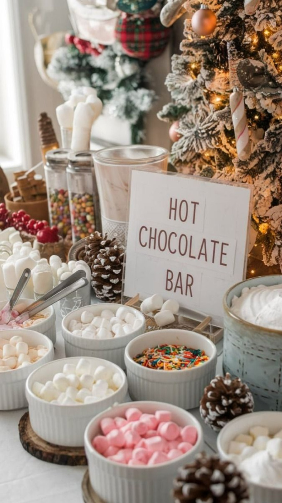
18. Let the Tablecloth Do the Decorating
The fastest bar decoration is a bold cloth. A red snowflake tablecloth, as here, makes the table look like a party before a single jar goes on it.
Add wafer cookies, pretzel sticks and chocolate-dipped spoons for dipping, and lay clear vinyl over the cloth if children will be pouring.
Label every bowl at the front edge, as these are. On a busy cloth the labels are the only thing that reads clearly.
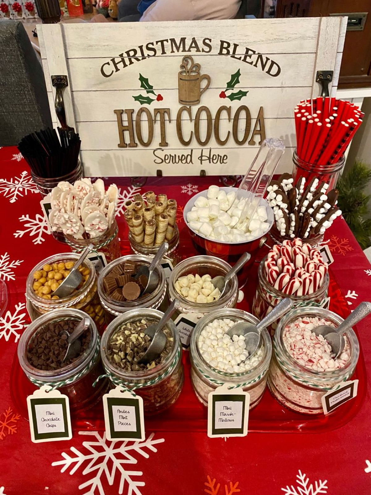
19. Keep the Liqueur on a Separate Tray
A cocoa board with marshmallows, peppermints, cookies and chocolate squares, as this round one, is the jar-free version of the bar. It also sits right next to the creamers and the bottle of Baileys.
Put anything with alcohol on its own tray with a clear label, away from the children's end. An 18-inch board is plenty for the toppings.
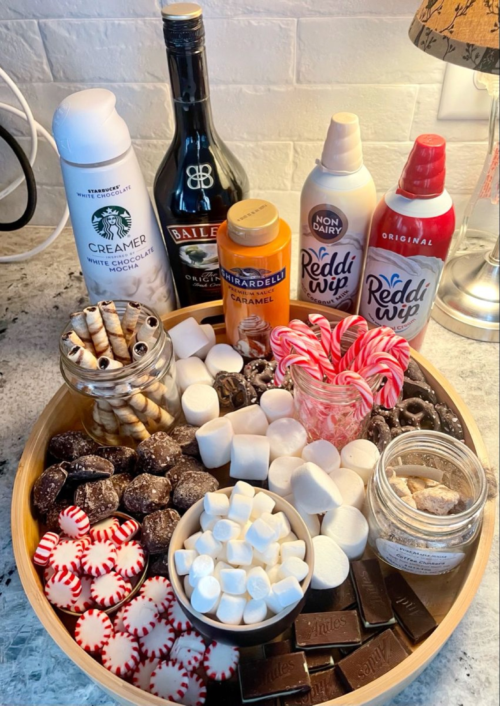
Extras That Make It an Event
20. Drizzle the Glass Before You Pour
The streaks on a cafe mocha come from the order, not the skill. Drizzle chocolate sauce around the inside of the glass first, then pour the cocoa, as in this mug with whipped cream and a candy cane.
A quarter teaspoon of peppermint extract per mug is enough. Half a teaspoon tastes like toothpaste.
Crushed peppermint on top goes on at the last second. It dissolves into the cream within a few minutes.
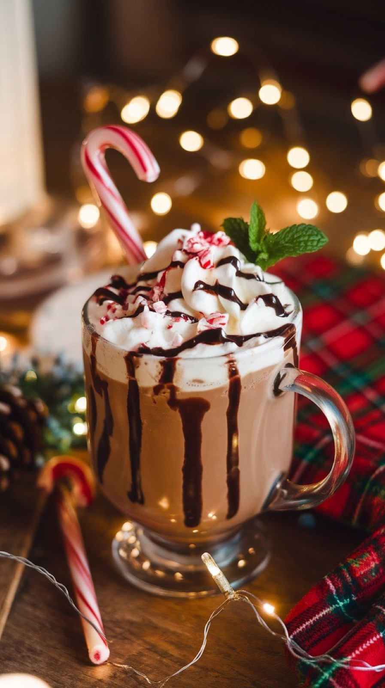
21. Theme the Tree When There Is No Table
No counter space is not a reason to skip the bar. A slim tree with candy cane ornaments, peppermint ribbon and a Hot Cocoa Bar banner, as this one, becomes the focal point and the bar sits on a shelf beside it.
Use plastic candy ornaments. Real candy melts near the lights and brings ants.
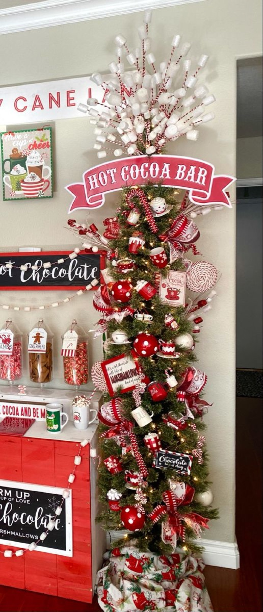
22. Go Up, Not Out, With Dessert Stands
A two-tier stand holds bark and chocolates in the footprint of one plate. On this sideboard, two stands sit beside the mugs with nutcrackers behind as the backdrop.
Choose treats that hold at room temperature. Peppermint bark, chocolate pretzels and shortbread sit for hours. Anything with cream or soft chocolate has to be refilled from the fridge.
Put the stands at the end of the line, after the cocoa. People take a treat on the way out, not on the way in.
Nutcrackers at the back, not the front. At the front they get knocked into the cocoa.
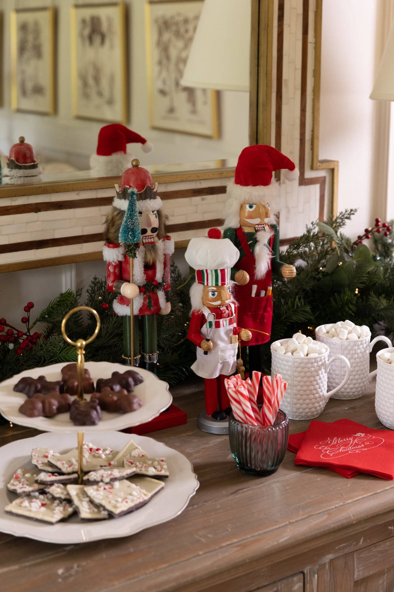
Common Mistakes (and Fixes)
- Mistake: ten or more toppings. Fix: pick six to eight and keep every jar full. A full small jar beats a half-empty big one.
- Mistake: boiling the milk to keep it hot. Fix: hold it at 140°F on the warm setting and stir every half hour.
- Mistake: whipped cream and milk out all afternoon. Fix: keep them cold and refill in small amounts. Nothing dairy sits out longer than two hours.
- Mistake: thin paper cups. Fix: double-wall cups, sleeves, or real mugs. A thin cup of 140°F cocoa gets dropped.
- Mistake: the bar in a walkway. Fix: a corner or a wall, so guests can queue without anyone brushing the urn.
Where to Start
Twenty-two setups is more than any party needs. Pick the one that fits your counter, set out the jars and signs the night before, and leave only the cocoa and the cold items for the day.
A bar that is ready before the doorbell rings is the one where the host gets a cup too.